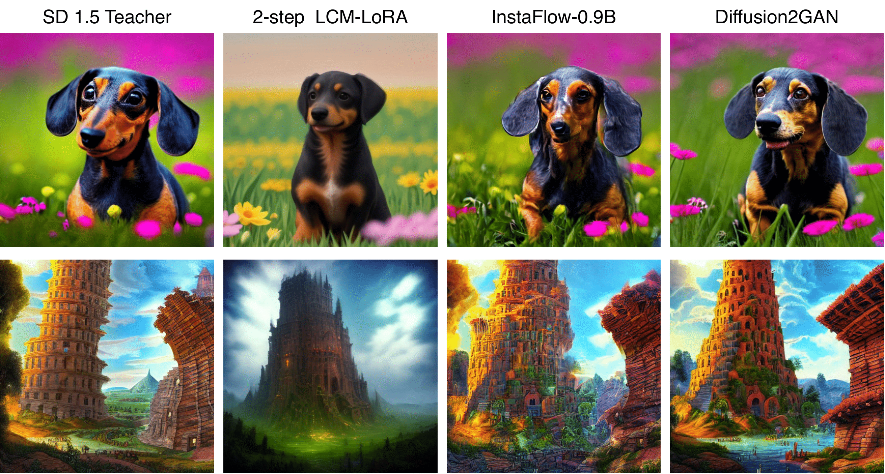
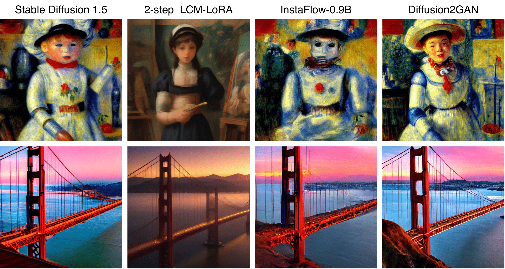
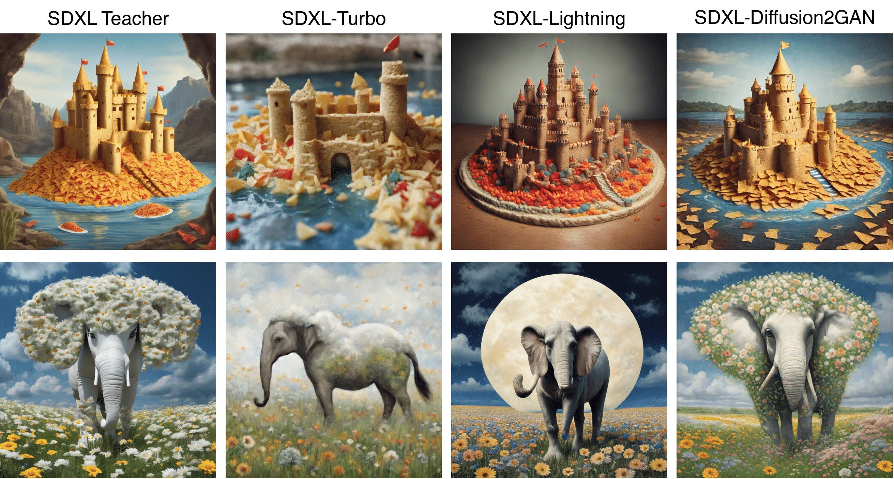
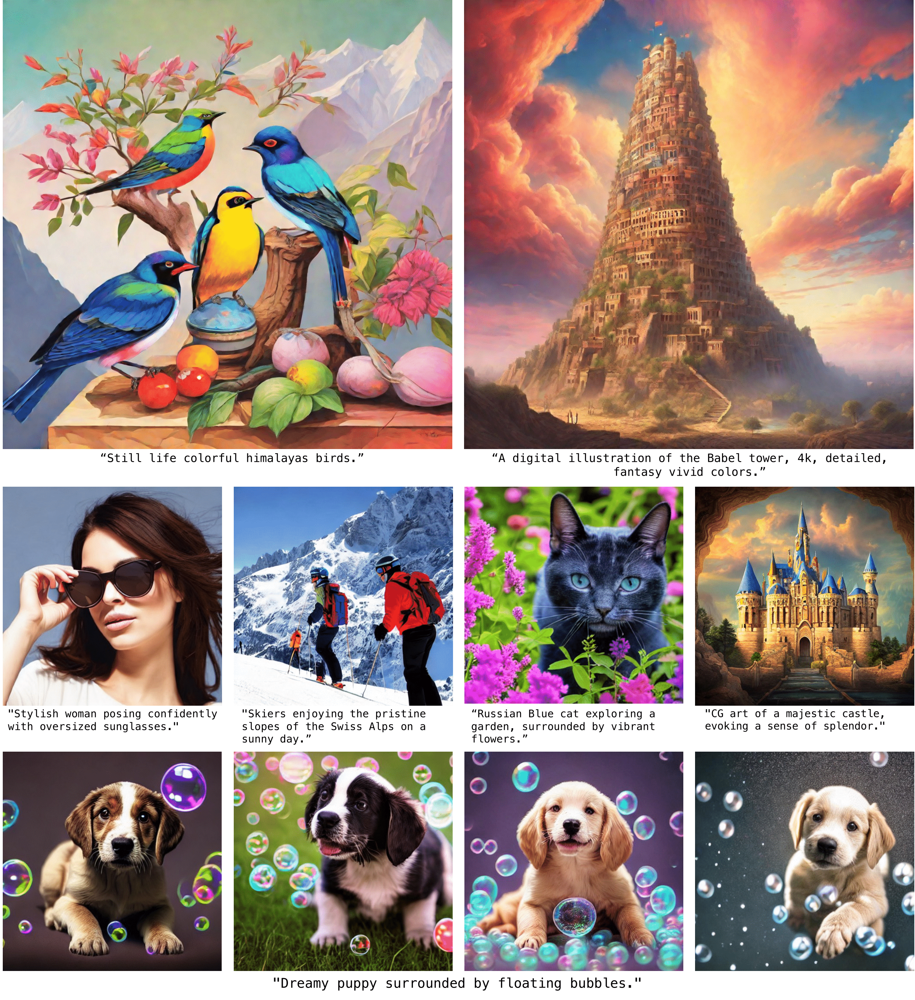
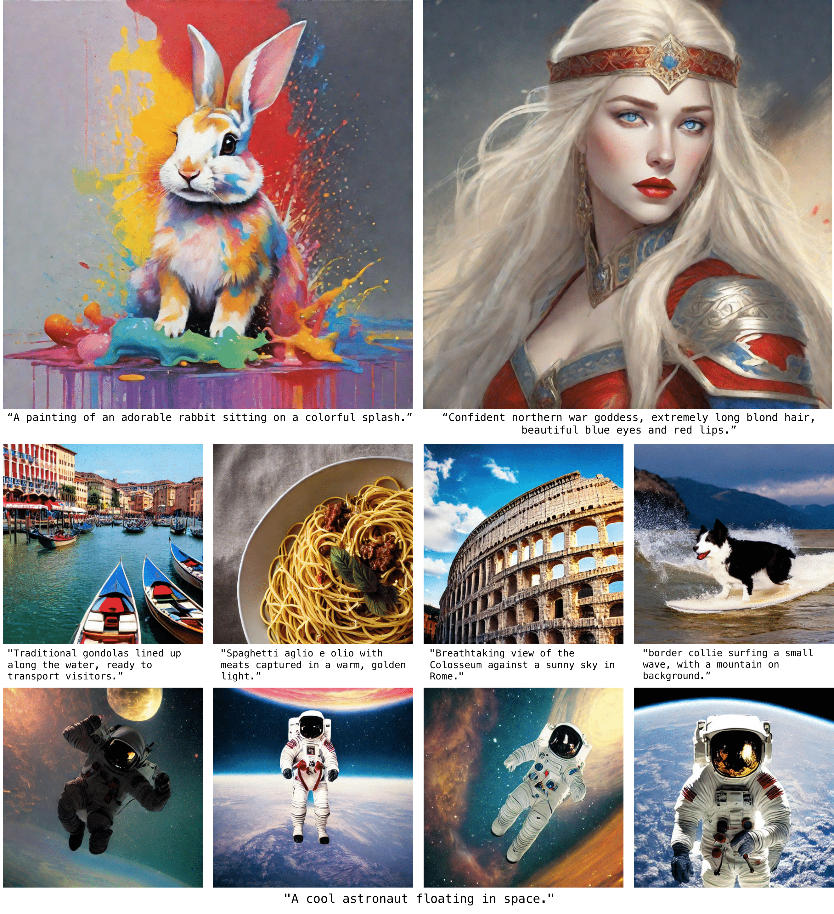
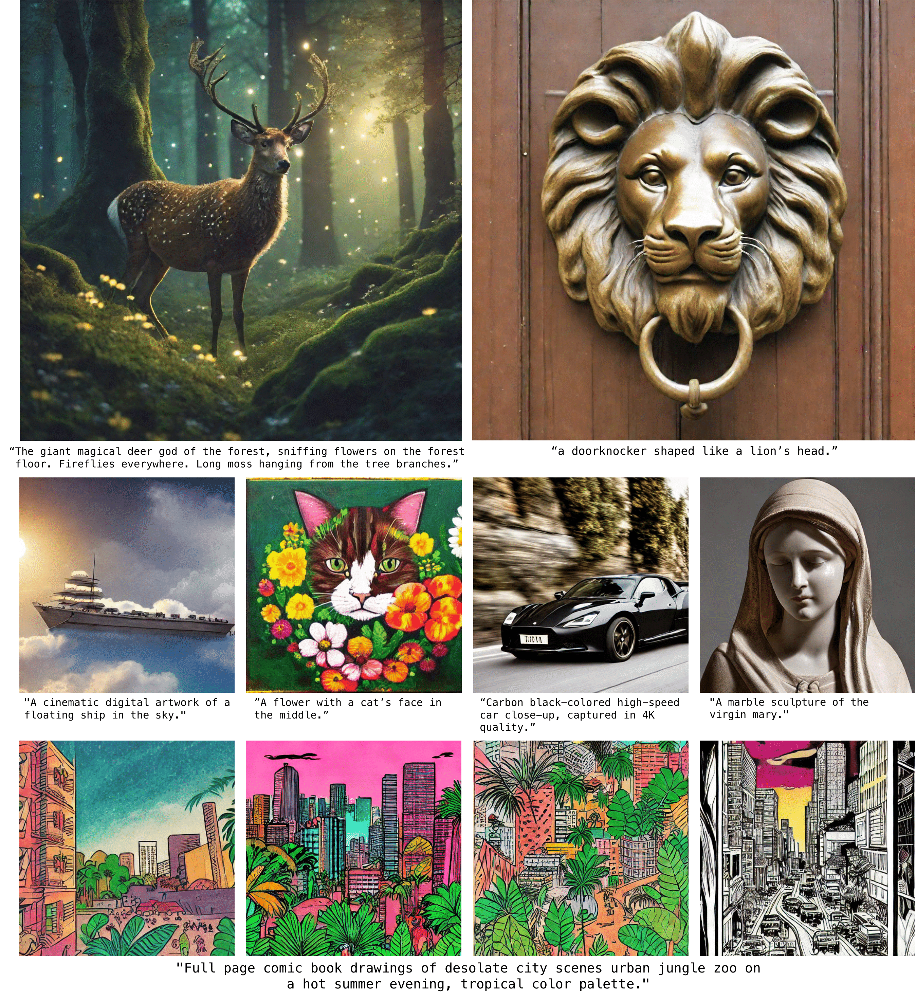

Diffusion2GAN can learn noise-to-image mapping of a target diffusion model




One-step image synthesis using Diffusion2GAN
Diffusion2GAN can generate a 512px/1024px image at an interactive speed of 0.09/0.16 second. By learning the direct mapping from Gaussian noises to their corresponding images, Diffusion2GAN enables one-step image synthesis.


